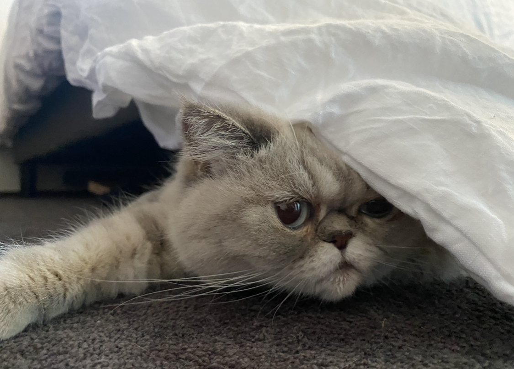

Does your cat manage to get stuck to the window screen every single day without fail? Even if you trim her claws frequently and make sure to keep them short? Have you ever come home from work to find your cat stuck? Who knows how long she's been sitting there. Well, follow these simple instructions to free her!
Your cat should now be free, and you can go back to playing the new Animal Crossingor watching Love isBlind on Netflix
Look at how relaxed she is now:
